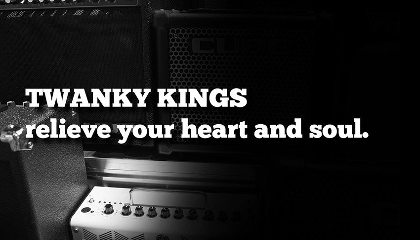

What is Twanky Kings?
Twanky Kings Records-company is a Belgian independent record label founded by Vincent Vossen, Simon Raeymaeckers, Robbe Vercammen and Michiel Bauvøis in 2017. Twanky Kings is known of its dedication on keeping the Chicago Blues genre alive.
Urban blues started in Chicago and St. Louis, as music created by part-time musicians playing as street musicians, at rent parties, and other events in the black community. For example, bottleneck guitarist Kokomo Arnold was a steelworker and had a moonshine business that was far more profitable than his music. Chicago blues is based on the sound of the electric guitar and the harmonica.
